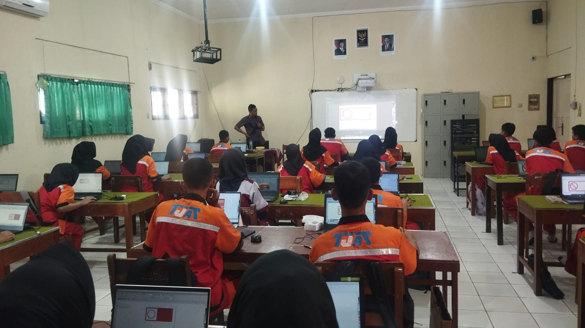

Sejarah SingkatJurusan Teknik Komputer dan Jaringan (TKJ) di SMKN 1 Sragi telah berdiri sejak tahun 2012. Bermula dari minat tinggi masyarakat terhadap teknologi informasi, sekolah mengembangkan lab khusus networking yang kini menjadi kebanggaan daerah Pekalongan. Awalnya hanya memiliki 2 rombel per angkatan, kini berkembang pesat hingga 4 rombel dengan animo pendaftar yang terus meningkat setiap tahunnya. Visi & MisiVisi:Misi:
|